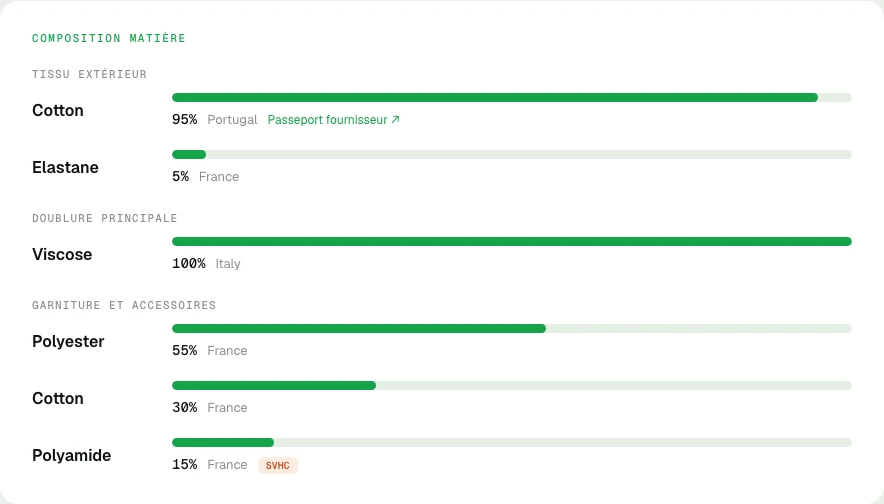
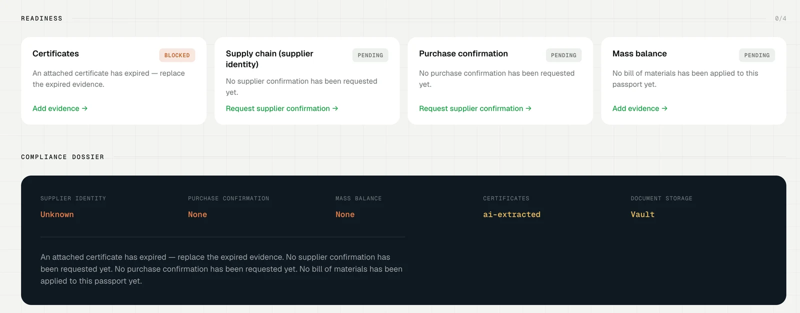
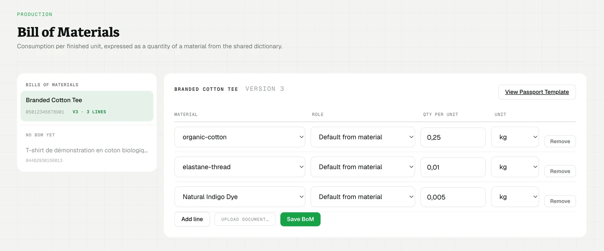
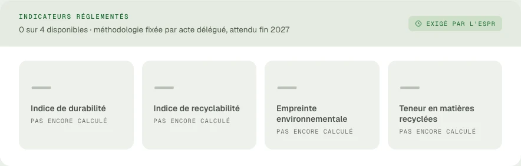
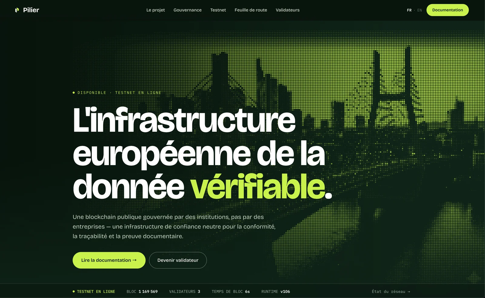

Software development
I take software projects from architecture through implementation and deployment, including applications, backend services, integrations and blockchain systems.
Based in Lille, France
I design, build and deploy software, AI-agent systems and blockchain infrastructure. I work on contract projects and provide fractional technical leadership.

I take software projects from architecture through implementation and deployment, including applications, backend services, integrations and blockchain systems.
I build agent systems that connect tools and coordinate development work, with review workflows, controls on agent actions and cost tracking.
I assess technical risks for investors and acquirers: architecture, code quality, security, infrastructure, dependencies and delivery readiness. Blockchain reviews cover smart contracts, protocol design and token economics.
I provide technical direction, make architecture decisions and establish engineering standards. I support delivery planning, hiring and mentoring.
Each engagement has an agreed scope, deliverables and working rhythm.
Product engineering · Founder & CTO · 2025–present
Managing textile evidence and product passports.
I designed and built Validité from the data model to the public passport pages. It combines supplier-certificate extraction with a mass-balance engine that compares certified material volumes with declared production.


The demo passport shows fibre composition by garment component alongside regulated product indicators. No values have been calculated for the four regulated indicators shown here.

Blockchain infrastructure · Co-Founder & Chief Architect · 2025–present
Document registration and product traceability on a public blockchain.
I designed the network’s token economics and developed its Rust/Substrate modules for access rights, document registration and product lifecycle records. My work also covers infrastructure deployment, network software releases and upgrades, and network operations and monitoring systems.

Staking · Token economics · Infrastructure
I developed the project’s entire staking system and worked on token economics and supporting infrastructure, including data services such as The Graph.
Engineering standards · Protocols · Developer tools
At Futureverse, I defined smart-contract engineering standards across the organisation and designed staking, registry and access-management systems. At Immutable, I worked on Ethereum Layer 2 infrastructure, developer tools, SDKs and the IMX marketplace.
My engineering practice
I built this system for my own development work. It coordinates agents, controls which tools and files they can use, limits run costs and context, and records their work for review.
The repository contains the agent definitions, enforcement hooks, deployment tooling and tests.
View the system on GitHubMore than 20 years in enterprise software, game production, blockchain and entrepreneurship.
2025–present
I built the platform’s certificate processing, material accounting and public passports, including AI-assisted verification using document retrieval and connected tools. I participate in the EuraTechnologies incubation bootcamp (Lille, 2026) and am a member of Fashion Green Hub.
2025–present
I work across protocol development in Rust/Substrate, token economics, network infrastructure, software upgrades and operational monitoring.
Mar 2022–2025
I set smart-contract engineering standards for security, gas optimisation and testing across the company, and mentored engineers.
I designed protocol systems for DeFi staking (Void), gamified NFT minting, AI requests and payments, asset and metadata registries, unified access management with a full-stack multisig wallet, crowdfunding and a token bridge. I also evaluated external projects and designed tokenisation systems: infrastructure, token economics and staking for a US AI-ownership project, and fractional ownership and upkeep funding for a New Zealand horse syndicate.
I designed governance and smart contracts for decentralised autonomous organisations (DAOs), helped form them, and participated as a member or delegate. At Altered State Machine, New Zealand (later part of Futureverse), I designed governance and smart contracts for tokenised AI-agent ownership. I also contributed to The Root Network Layer 1, reviewed Substrate/Rust code and mentored engineers on security and gas optimisation.
2021–2022
I contributed to Ethereum Layer 2 scaling, developer tools, SDKs, engine internals and the IMX marketplace, working across Go/AWS backend services and React/TypeScript interfaces.
2004–2007
I led production of Heroes of Might and Magic V for Ubisoft across offices in Russia, Belarus, Cyprus and the United States, managing large teams and multi-million-dollar budgets and delivering to schedule. I introduced Scrum on Blitzkrieg 2 in 2005.
2021
I designed staking strategies, audited core smart contracts and improved the CI/CD deployment pipelines.
2020
I developed exchange backend services, including AWS DynamoDB adjacency-list data models, Cognito authentication and Bittrex API integrations.
2018–2020
I audited Ethereum projects through static, dynamic and functional analysis, co-designed the “Verified Token” framework and made a major contribution to the open-source “Awesome Solidity” project.
Project work
I built a Polkadot oracle that imports currency data.
2011–2012
I founded and ran a real-estate agency serving Russian buyers, managing business development, client relationships and operations.
2008–2010
I delivered bespoke web projects, from the initial concept through development and deployment.
2000–2004
I worked on the Siebel/Oracle CRM implementation for Sberbank. Earlier, I managed enterprise web projects for clients including the Kremlin and the Bolshoi Theatre.
2001–2004
I founded and ran a web agency, handling business development, client projects, design and technical delivery.
1999
As founding developer, I handled the full development cycle of one of Russia’s early e-commerce stores.
I work with Rust, Solidity, Go, TypeScript/JavaScript and Python for software development; AWS, OVHcloud, Docker and CI/CD for infrastructure and deployment; and PostgreSQL, DynamoDB and Redis for data storage. I also work on product architecture, business analysis and UI/UX prototyping.
My blockchain experience covers Substrate and the EVM, Layer 1 and Layer 2 networks, token economics, staking, DAO governance, bridges and smart-contract security. For AI systems, I integrate tools and retrieval-augmented generation (RAG), including connections through the Model Context Protocol (MCP).
I combine technical due diligence with architecture decisions, delivery planning, hiring and mentoring. My management experience includes Scrum and multi-million-dollar production budgets.
I am a native Russian speaker, fluent in English and learning French (B1). I hold New Zealand citizenship and am based in Lille, France.
Tell me about the software you want to build, the project you need assessed, or the technical decisions your team is facing.